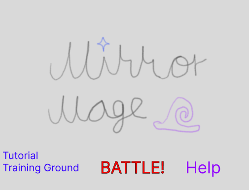
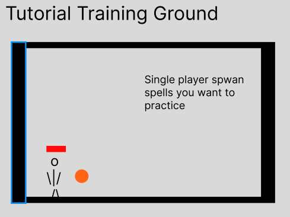
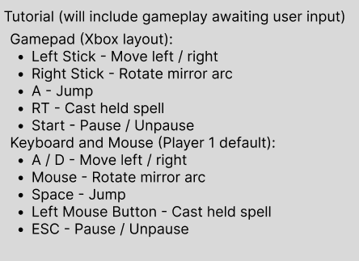
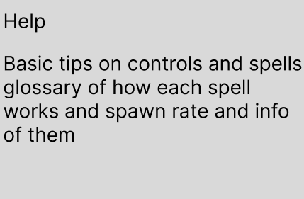
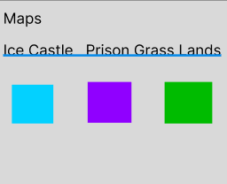
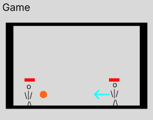
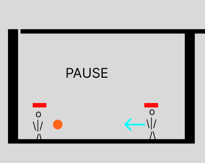
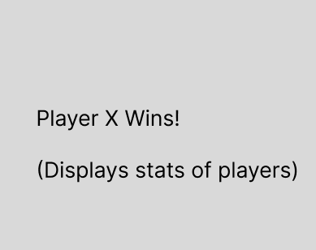

Mirror Mage is a 2 to 4 player local multiplayer arena game. Each player controls a mage carrying an arc-shaped mirror that orbits their body. Spell items drop onto the stage and must be picked up to be used. One hit kills. Rounds are fast - typically under a minute. The skill is in rotating your mirror to deflect incoming spells back at opponents while racing to grab the next item drop. This document describes the initial game, which contains 2 playable levels and serves as a foundation for the full game.
Mirror Mage is built using the Wolfie2D game engine. Custom gameplay systems - spell item spawning, mirror arc rotation, reflection angle math, and stock tracking - are implemented on top of the engine. All code is maintained in a shared GitHub repository. The game is deployed to Firebase at: https://mirror-mage.firebaseapp.com
The Arcane Consortium settles all internal disputes the same way: mages enter a sealed arena and cast spells at each other until someone goes down. Each mage carries an Arc Mirror - a curved shard of enchanted glass that can redirect any spell that strikes its inner face. The last mage standing wins.
Each player starts with 3 stocks. Any spell that contacts a player's body kills them instantly and removes one stock. The mirror cannot be destroyed in this game - it either reflects a spell or it doesn't, depending on which face the spell hits. The last player with stocks remaining wins the match. There is no damage percentage and no knockback - a hit is simply a kill.
Players move left and right and jump around the arena. Spell items fall from above at random intervals and land on platforms. A glowing indicator appears at the drop location one second before an item lands so all players can see where to move. Walking over a spell item picks it up automatically. Each player holds at most one spell at a time. Picking up a new spell while already holding one drops the current spell on the ground, where any player can grab it.
Casting fires the spell and immediately empties the player's hand. Players must then compete for the next drop. This creates short bursts of tension: race to the item, pick it up, aim, fire, then scramble again. With 3 or 4 players, multiple spells are in the air simultaneously and the mirror becomes critical for surviving shots from directions you are not currently threatening.
The Arc Mirror orbits the player at a fixed radius and covers roughly 120 degrees of arc. The player rotates it freely using the right stick or mouse. Any spell that strikes the concave (inner) face reflects off at the angle of incidence. A spell that hits the convex (outer) face or the player's body kills that player instantly. Reflecting an enemy spell back at them - or redirecting it at a third player - is the primary way to score a kill without holding a spell yourself.
Four spell types are available. All kill in one hit if they contact a player's body. Spells bounce off solid terrain surfaces. A mirror reflect resets the bounce count, giving a reflected spell fresh range.
Level 1 - The Prism
A simple flat arena with one raised platform in the center. The left and right walls are reflective - spells
bounce off them exactly as they would off a player's mirror. No hazards. This level teaches the core loop:
grab the spell, aim, fire, reflect. The single raised platform gives players a height advantage to contest and
creates natural positioning decisions around item drops.
Level 2 - Volcano Vent
Two platforms at different heights above a lava floor. Touching the lava kills instantly, the same as taking
a spell hit. A single spell cannon is mounted on one wall and fires a Fireball every 10 seconds. The cannon
shot follows the same reflection rules as player-cast spells and can be deflected back across the stage by a
well-placed mirror. Players must manage positioning around both the lava below and the cannon on the wall
while still competing for spell item drops.
Gamepad (Xbox layout):
Keyboard and Mouse (Player 1 default):









All artwork will be original. The following is the minimum needed for a working game:
Minimum sound effects needed:
One looping background track per level. Music must be original or used with explicit permission. A single shared track may be used across both levels if time does not permit two separate compositions.